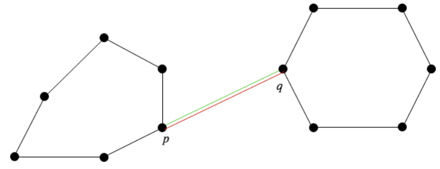
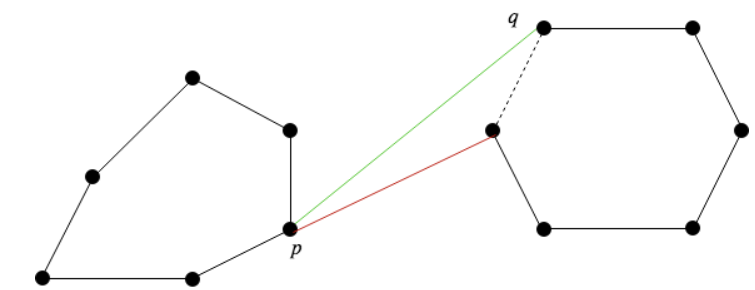
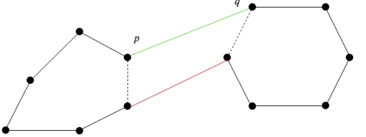
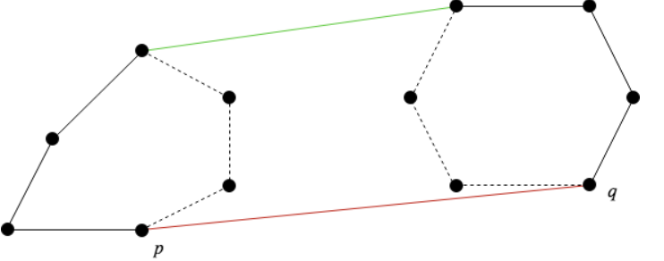
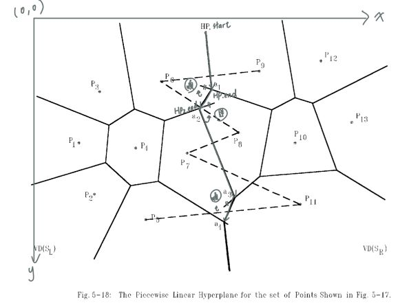
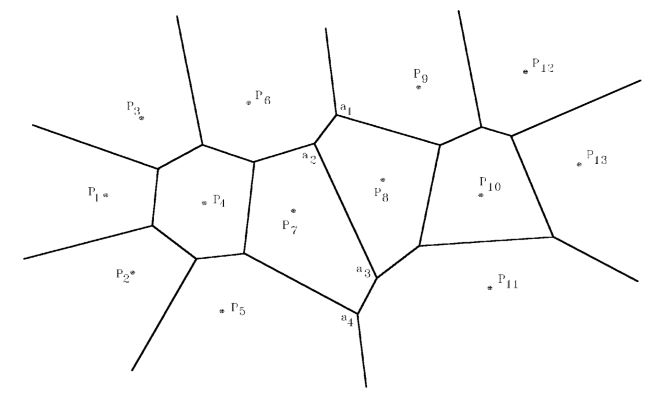
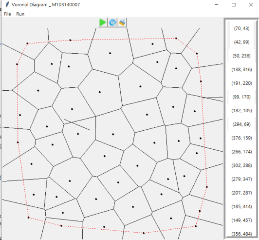

軟體規格書
輸入
- 以滑鼠在600*600的畫布上隨意點擊
- 點擊"file"中的"input file"讀入「輸入文字檔」與「輸出文字檔」
輸出
- 點選"File"中的"save file"來輸出「輸出文字檔」
- 輸出格式:
"P" x y //原輸入點座標
"E" x1 y1 x2 y2 //分割線段 (x1,y1)為起點 ，(x2,y2)為終點
座標點以 lexical order順序排列（即先排序第一維座標，若相同，則再排序第二維座標；線段亦以 lexical order順序排列)
- 線段的lexical order (字典序)
- 範例如下:
P 103 200
P 193 64
P 193 370
P 283 200
P 283 200
E 0 34 193 161
E 0 363 193 261
E 193 161 193 261
E 193 161 437 0
E 193 261 600 476
a. 線段E x1 y1 x2 y2，座標須滿足x1≦x2 或 x1=x2, y1≦y2
b. 不同線段之間，依照x1, y1, x2, y2的順序進行排序(字典序)
介面
- 最上方為功能目錄欄
- 畫布上方之icon由左至右分別為 Run,Step by Step,Clean之功能
- 中間為視窗畫布，大小為600*600，其中左上方為原點(0,0)
- 右側顯示欄則為點擊畫布時的點座標

可以利用滑鼠直接點擊畫布，或者讀取輸入資料；並且使用直接執行即逐步執行之功能實現Voronoi Diagram於畫布上，來進行軟體測試。
- 1~3點: 直接顯示
- 4~6點: 一次Divide一次Merge
- 7點以上: 多次Divde和多次Merge
軟體說明
安裝方法
下載好檔案後，開啟main.exe即可執行使用方法
1.輸入資料
能夠使用以下兩種方式來生成- 用滑鼠直接點擊於畫布任意區域，來產生點座標。
- 點擊"File"中的"open file"來開啟檔案
執行程式&結果顯示
能夠使用以下兩種方式來執行程式- 點擊執行Run模式，會直接顯示圖形結果。 其中黑色實線為Voronoi Diagram 紅色虛線為Convex hull
- 點擊執行Step by step模式，將顯示過程與最終結果
- 每次merge前暫行，並以藍色&橘色點線區分左右兩邊
- 紅色粗線則代表Hyper plane
輸出資料
- 點擊"File"中的"save file"即可輸出資料存檔為"output.txt"，格式上如上輸出規格所示。
清除畫布
- 點擊即可清除畫布上的資料
程式設計
- Point: 儲存點座標(x,y)以及處理相關運算(e.g.找中點)
- Vector: 處理向量之運算(e.g. 外積、法向量)
- Triangle: 處理三角形之相關運算(e.g.計算面積、外心)
- Divider : Voronoi Diagram之分割線 結構:(線段起點,線段終點,被分割之點A,被分割之點B
- Convexhull: Voronoi Diagram之Convexhull 結構:(點,上切線,下切線)
2點
- 直接計算兩點之間之中垂線即為Voronoi Diagram之分割線
3點
- 首先判斷三點是否為三角形
- 若不是，則代表共線，直接計算各兩點之間之中垂線
- 若為三角形，則將點利用逆時針方向排序(以確保分割線往正確的方向切割)並計算兩點之間的中垂線後，以三角形的外心作為三線之交點。
Divide and Conquer
- 分割: 將座標點排序後，把所有座標分為左右兩半
- 求左右兩邊個別之Voronoi Diagram
- 利用Convex Hull 求出全部點的上下切線，以作為hyper plane之進入點
- 找出hyper plane : 利用上切線之中垂線作為進入點，當撞到Voronoi Diagram時(有交點)就轉彎，最後從下切線離開
- 消線:根據hyper plane的方向(外積)來進行消線之動作
Convex Hull之實作方法
透過不斷旋轉(逆時針/順時針旋轉)來找到上下切線，如圖所示: 參考資料 


消線之實作
方法如同上課所教，計算(HP.start , HP.end,HP2.end)之外積來判斷其方向為順時針/逆時針，並把該方向之線段消除。 

軟體測試與實驗結果
- 程式語言(版本): python 3.8.8
- 作業系統: Window10 家用版
- 記憶體 : 24GB
- 處理器: 11th Gen Intel(R) Core(TM) i5-11300H @ 3.10GHz 3.11 GHz
- 編譯器:直接使用CMD 進行python編譯 (python ./main.py)
- 測試極限: 輸入點大約為30~40左右為極限，40點以上可能會有消線沒消好的問題存在(如圖)
應該為在消線實作上仍有未考慮完整之地方存在

結論與心得
演算法的期中專題算是我第一次實作出的演算法程式，在剛開始聽到作業方法實，就知道這項作業架構比以往寫過的任何程式都來的複雜，也讓我更加熟悉物件導向程式之設計， 在一開始就把資料結構設計好，是非常重要的，這為之後增加任何功能都打下了很好的基礎，而此次專題最難的部份我認為是想出一個好的數學方法來解決問題，對於大學後就不太碰到向量外積等概念的我來說，算是一大困難， 透過這份專題著實地幫我複習了高中數學，但是所有的努力換來的成果，讓我有滿滿的成就感!也讓我對程式的架構方法有了更進一步的認識，可以說是受益良多。